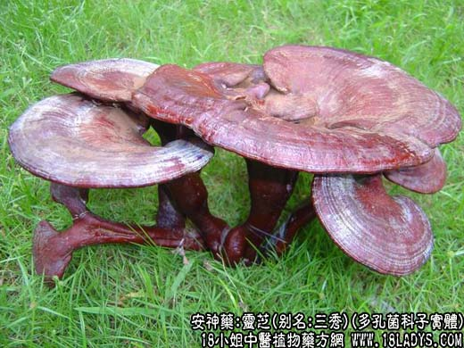

【中药概述】
灵芝，别名：三秀、苬、芝、灵芝草、木灵芝、菌灵芝，为多孔菌科菌类灵芝或紫芝的子实体。甘、平。归肺、脾、心经。
1．宁心安神：用于失眠，健忘，头晕，神经衰弱等，可与远志，秫米，五味子，枣仁，制首乌等同用。
2．滋养强壮：用于病后虚弱，良欲不振，消化不良，全身乏力，虚劳等症。
3．止咳平喘：用于止咳、化痰，哮喘，慢性支气管炎，矽肺。还用于高血压、冠心病、高血脂、肝炎，风湿性关节炎等。
【药理作用】
1.有镇静作用；
2.可提高小鼠的耐寒耐缺氧能力；
3.有降血压、利尿作用；
4.有保肝作用，和降转氨酶作用；
5.有降血糖、止咳、平喘作用；
6.对肺炎球菌、甲型链球菌、白色葡萄球菌、流感杆菌等不同的抑制作用。
【化学成分】
含麦角固醇、真菌溶菌酶、酸性蛋白酶、蛋白质、氨基酸及糖类等，紫芝含麦角固醇、海藻糖、有机酸、氨基酸及糖类等。
【用量用法】
8——15g，水煎服，或入剂。
【注】
灵芝属的植物很多。在分类学上一般以赤芝为代表种。